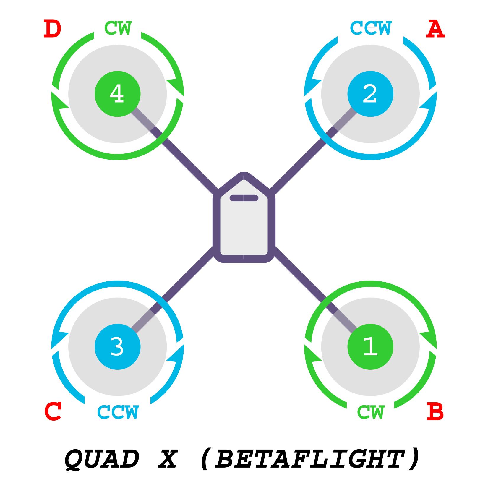
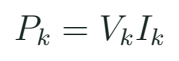
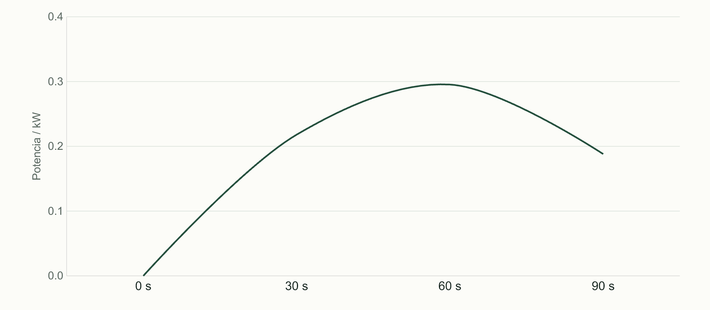

Taller presencial 2: configuración, prueba y demostración de vuelo
Explicar la aceptación de una configuración y relacionar un vuelo básico o caso equivalente con sus registros.
Comprobar antes de demostrar
La última sesión parte del acta de montaje y de una configuración identificada. Gerard selecciona una aeronave preparada para la demostración y presenta qué se revisó. No se intenta volar todos los tamaños por cumplir una lista: los equipos de 5, 7 y 12 pulgadas aportan comparaciones, y el vuelo básico puede concentrarse en uno que represente los objetivos del curso.
Cuatro correspondencias finales
| Revisión | Qué se contrasta | Evidencia |
|---|---|---|
| Mecánica | Montaje y configuración documentados | Inspección y versión |
| Entradas | Mandos y estados previstos | Canales y modos |
| Salidas | Posición y sentido de cada motor | Prueba sin hélices |
| Operación | Equipo y condiciones del caso | Decisión del docente |
Las pruebas de salidas y enlace se realizan en el banco preparado sin hélices. La instalación final de hélices pertenece a otra fase, con energía retirada y revisión de sentido y fijación. Se organiza una única actividad energizada a la vez con el docente a cargo. El grupo conserva separación y roles de observación; no queda un banco de motores activo sin supervisión mientras el instructor explica otro equipo.
El vuelo es una demostración del instructor, sujeta a preparación del vehículo y condiciones del lugar. El certificado del curso no se presenta como una licencia de piloto ni como entrenamiento individual garantizado de vuelo.
Agenda de cuatro horas y alternativa de clase
Taller presencial 2
| Minutos | Actividad | Resultado |
|---|---|---|
| 0–30 | Revisión del acta y configuración | Estado del equipo identificado |
| 30–75 | Entradas y salidas de banco | Correspondencias observadas |
| 75–110 | Autopiloto y Mission Planner | Comparación con equipo grande |
| 110–165 | Demostración de vuelo o caso alternativo | Registro de eventos |
| 165–215 | Análisis y diagnóstico | Conclusión respaldada |
| 215–240 | Defensa y cierre | Expediente final |
El bloque de vuelo contempla desplazamiento y organización local según el lugar. La cohorte debe saber de antemano dónde se reúne y cómo se desarrolla esa actividad. Si el clima, el lugar o el estado de un equipo impiden el vuelo, se mantiene el aprendizaje con revisión en banco y análisis de un registro o demostración previamente identificados. Una observación grabada se presenta como grabada, y una simulación se identifica como simulación.
No se convierten las cuatro horas finales en una sesión improvisada para reparar todo el ensamblaje. La preparación previa conserva un equipo funcional de demostración y un caso alternativo. Las correcciones nuevas se acotan y documentan; un resultado pendiente no se disimula con una explicación de otra versión.
El dron grande en Mission Planner

El instructor relaciona autopiloto, módulo de potencia, GPS, brújula, receptor y telemetría con la estación de tierra. Explica dónde se observa estado y qué configuración pertenece a ese modelo. No hace falta enseñar una misión autónoma completa para demostrar la diferencia entre construir la cadena y obtener una solución de navegación válida. La lectura de una pantalla se relaciona con el montaje que está delante del grupo.
Comparación de alcance de aprendizaje
| Equipo pequeño | Equipo con autopiloto | Principio compartido |
|---|---|---|
| Placa y target Betaflight | Autopiloto y firmware ArduCopter | Identificación exacta |
| Receptor, modos y salidas | Entradas, calibraciones y modos | Correspondencia con el objeto |
| Datos disponibles del sistema | Estado y telemetría en Mission Planner | Interpretación con condiciones |
Si se utiliza SITL como complemento, se registra el modelo de software y se conserva separado del vehículo real. El tutorial oficial de simulación puede usar una rama de desarrollo; no se utiliza esa circunstancia para asumir que cualquier versión está validada para el dron del taller.
Observar el vuelo con preguntas concretas
Antes de la demostración, el alumno predice qué evento podrá observar: inicio, armado, despegue, vuelo básico, aterrizaje y cierre según el caso elegido. La misión de la clase es relacionar decisiones de ensamblaje y configuración con el comportamiento mostrado. No se exige aprender maniobras FPV ni operar varios modos nuevos a la vez. El instructor define qué observa el grupo y qué datos puede registrar realmente.
- Identifica vehículo, configuración y propósito de la demostración.
- Distingue eventos visibles de magnitudes que requieren un sensor o registro.
- Conserva la hora o una referencia temporal del caso.
- Observa comportamiento y avisos sin asignar causas todavía.
- Después del cierre, compara el registro disponible con la expectativa.
- Separa resultado observado, hipótesis de causa y siguiente comprobación.
La operación se prepara con las condiciones y trámites aplicables al lugar y al equipo. Para la actualización del curso se consultaron el Reglamento de la Ley 30740 aprobado por DS 012-2026-MTC y la información de trámites de la DGAC. El docente verifica sus disposiciones y condiciones vigentes al organizar la jornada; este temario académico no sustituye esa determinación.
Observación y conclusión
Se ve una oscilación. ¿Podemos afirmar inmediatamente “falta subir P”?
Ver razonamiento del caso
No. Se registra qué se observó y se investiga montaje, hélice, condiciones, medida y configuración. Una apariencia no identifica una causa única.
Un registro para aprender a analizar
Datos sintéticos del caso, no de un vuelo MECRO
| Tiempo / s | Tensión / V | Corriente / A |
|---|---|---|
| 0 | 22,2 | 0 |
| 30 | 21,8 | 10 |
| 60 | 21,1 | 14 |
| 90 | 20,9 | 9 |

Potencia y caída de tensión
En la fila de 60 s, ¿qué potencia eléctrica se calcula? ¿21,1 V demuestra por sí solo la energía restante?
Ver razonamiento del caso
P = 21,1 × 14 = 295,4 W. La tensión bajo esa carga no determina sola la energía restante ni un umbral universal de operación. Se necesita contexto del paquete, medida y condiciones.
Un archivo Blackbox, un registro del autopiloto y un CSV de aula tienen estructura y procedencia distintas. El conjunto sintético incluido sirve para practicar lectura y cálculo; no se anuncia como archivo nativo reproducible de esas herramientas. Si Gerard aporta datos reales, conserva firmware, configuración, origen temporal y condiciones de adquisición antes de compararlos.
La mejora final propone una sola intervención con motivo y prueba: cambiar un acceso, corregir una asignación o investigar una caída de tensión. Se valora que la explicación se apoye en datos y en la configuración identificada.

Defensa del expediente y siguiente ruta
Evaluación del curso
| Componente | Peso | Qué se revisa |
|---|---|---|
| Selección y cálculos | 35 % | Compatibilidad y condiciones |
| Esquema y secuencia | 25 % | Ensamblaje explicable |
| Configuración y comprobaciones | 25 % | Correspondencia y evidencia |
| Defensa individual | 15 % | Decisión, límite y siguiente prueba |
- Presenta propósito, referencia de tamaño y arquitectura.
- Justifica una selección de propulsión con datos y unidades.
- Sigue una ruta de energía y otra de información.
- Explica una comprobación observada en los presenciales.
- Reconoce una limitación del expediente y propone cómo resolverla.
El egresado debe poder preparar una compra razonada y reconstruir el proceso de ensamblaje y configuración básica. La práctica individual extensa de soldadura, pilotaje FPV, ajuste avanzado de filtros/PID y misiones autónomas completas requieren bloques posteriores. Las ocho sesiones conservan una meta alcanzable y dejan una ruta clara para profundizar sin prometer que una sola demostración forme especialistas en todos los sistemas.
Para MECRO, la siguiente oferta puede ser un taller de armado por equipo con más puestos supervisados, o un módulo de configuración y diagnóstico con hardware propio. La evidencia reunida en este curso permite detectar quién necesita reforzar electrónica, documentación o interpretación antes de dar ese paso.
Práctica guiada
- Contrastar el acta de montaje con una aeronave preparada.
- Comprobar entradas y salidas antes de presentar el vuelo.
- Relacionar la demostración o el caso alternativo con un registro identificado.
- Evaluar el expediente y la defensa individual de una decisión.
Preguntas de cierre
¿Ver una oscilación identifica una ganancia incorrecta?
No. Es un síntoma; la causa requiere contrastar otras evidencias.
¿El CSV incluido es un Blackbox real?
No. Es un conjunto sintético de aula y se mantiene identificado como tal.
¿Qué debe poder defender el alumno al finalizar?
Una selección compatible, un esquema, una secuencia y las comprobaciones que respaldan su conclusión.
Entrega
Expediente final, análisis del caso observado y defensa individual de una mejora.
Fuentes para ampliar
[AP] ArduPilot. Copter: First Time Setup.
[APCONFIG] ArduPilot. Mandatory Hardware Configuration.
[APFLIGHT] ArduPilot. Initial Tuning Flight.
[APMOTOR] ArduPilot. Conexión, orden y sentido de motores.
[SITL] ArduPilot. Mission Planner Simulation.
[MOTORS] Betaflight. Motors Tab.
[MTC] El Peruano / MTC. Decreto Supremo 012-2026-MTC: Reglamento de la Ley 30740, publicado el 29/05/2026.
[DGAC] MTC. Requisitos para las operaciones de RPAS: información de trámites.